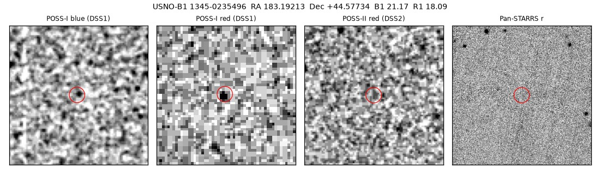

Professor of Mathematics
Paata Ivanisvili
Department of Mathematics, University of California, Irvine

Candidate 34: a faint spot on 1955 plates that is no longer there
Why this estimate. The spot is on both photographic plates taken at Palomar on the night of 28 February 1955, one in red and one in blue light, at the same place, and nothing has been seen there since. But on the red plate it is sharper than every real star, which is what a flaw in the emulsion looks like, and on the blue plate it is barely above the noise, so the most likely explanation is a plate flaw that happened to fall where a noise peak was.
How to read the pictures. The cutouts are one and a half arcminutes across, centred on the spot, which is marked by a red circle, with north up and east to the left. From left to right they show the 1955 blue and red plates of the first Palomar Sky Survey, the red plate of the second Palomar survey, taken decades later, and the Pan-STARRS1 survey image from 2010 to 2014. On these images dark means bright.

What changed. In 1955 the Palomar Sky Survey photographed this patch of sky in blue and red light on the same night. Both plates show a faint, star-like spot at the same position, to within 1.4 arcseconds, with a red magnitude of about 18.1 and a blue magnitude of about 21.2. Nothing has been found there since: no star in Gaia, nothing in Pan-STARRS1 within 8 arcseconds, nothing in the Legacy Surveys, 2MASS or WISE within 3 arcseconds, and nothing on the later Palomar red plate or in the much deeper Legacy Surveys images. No known asteroid was there, a moving object would not have appeared at the same place on two plates taken at different times, and no fast-moving Gaia star passes through the spot.
Why the estimate is low. Light from the sky is always blurred at least as much as the stars on the same plate, but on the red plate the spot is 3.2 arcseconds across, sharper than every real star on it (3.8 to 6.3 arcseconds). That is how flaws in a photographic emulsion look. The blue detection is weak, 4.6 times the noise; a noise peak this strong at the same spot turns up for about one source in 170, so about one in eight searches of this size would turn up such a coincidence. If the spot was real, it would be one of the few known stars that seem to have vanished, which are interesting because a star should not simply disappear.
The published list of vanishing sources of Solano et al. (2022) could not be checked, so this source may already be on it.
- Source
- USNO-B1 1345-0235496, a source seen only on photographic plates from 1955; no Gaia star lies within 53 arcseconds
- Location
- RA 183.19213°, Dec +44.57734° (J2000), in Canes Venatici, far from the Milky Way
- Distance
- unknown
- Brightness
- red magnitude 18.1 and blue magnitude 21.2 on the 1955 plates; nothing seen there since
- Probability
- This candidate is unconfirmed. The percentage under the title is an estimate of the chance that it is a real, previously unrecorded case of the kind described. The estimate has not been checked by outside experts. See the introduction to all fifty-eight candidates.
- Caveat
- The red image is sharper than any real star on the plate and the blue one is close to the noise, so a plate flaw is the likelier explanation. The list of vanishing sources of Solano et al. (2022) could not be checked.